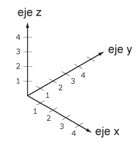
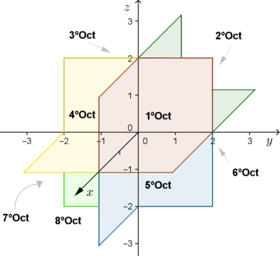

Los planos de 3 ejes vienen del sistema de coordenadas tridimensional, que se usa para ubicar
puntos en el espacio.
En lugar de solo dos dimensiones (como en una hoja), aquí trabajas con tres ejes:

Para ubicar un punto en un sistema de tres ejes, comienza en el origen (0,0,0) y muévete primero
sobre el eje X según el primer número del punto:
si es positivo, hacia la derecha; si es negativo, hacia la izquierda; luego desplázate en el eje Y según el
segundo número:
si es positivo, hacia adelante; si es negativo, hacia atrás; y finalmente ajusta la altura en el eje Z con el
tercer número:
si es positivo, subes y si es negativo, bajas.
Para el punto (3, -2, 4):
Avanzas 3 en X (derecha)
Luego -2 en Y (hacia atrás)
Luego subes 4 en Z
Y ahí marcas el punto.
Los octantes son las ocho regiones en las que se divide el espacio
tridimensional cuando los tres ejes
coordenados (X, Y, Z) se cruzan en el origen.
Cada octante se define según si las coordenadas de un punto son positivas o negativas.
En total hay 8 combinaciones posibles de signos, por ejemplo:
(+, +, +), (+, +, ), (+, , +), etc. El primer
octante es donde todas las coordenadas son positivas,
es decir, los puntos tienen la forma:
(x,y,z) con x>0, y>0, z>0
